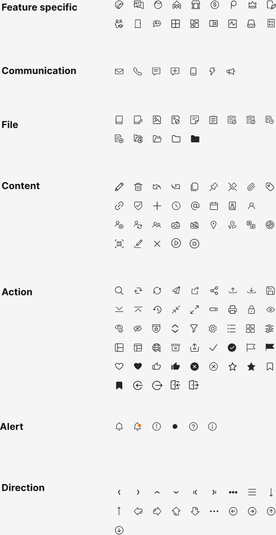
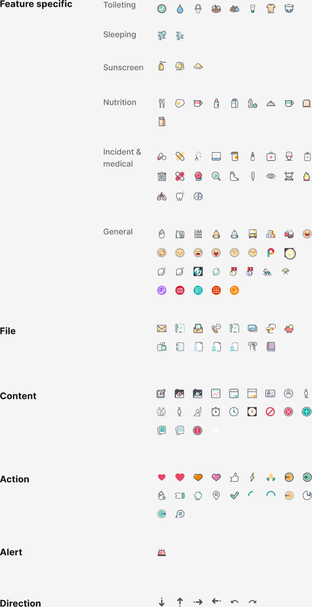

Component
Icons
Stardust ships two icon sets: iconOutline — monochrome stroke icons for standard UI controls and actions — and iconColoured — illustrated full-colour icons for domain-specific features such as care categories, health, nutrition, and activities.
Icon sets
| Set name | Reference | Style | Count | Purpose | Figma node |
|---|---|---|---|---|---|
| Outline | iconOutline |
Stroke · monochrome | 144 | Standard UI — actions, navigation, controls | 4652:16081 ↗ |
| Coloured | iconColoured |
Illustrated · full-colour | 134 | Domain-specific — care categories, health, features | 4652:16111 ↗ |
iconOutline for all interactive UI controls (buttons, navigation, form fields).
Use iconColoured only for feature-identity contexts where the illustrated style is
semantically meaningful — activity cards, category badges, health records.
Naming convention
Icon references follow a slash-separated path: set / category / name. Coloured feature-specific icons add a subcategory tier. Figma layer names are the source of truth — always confirm exact names in Figma before shipping.
| Segment | iconOutline | iconColoured |
|---|---|---|
| Set prefix | iconOutline | iconColoured |
| Category | feature-specific · communication · file · content · action · alert · direction | feature-specific · file · content · action · alert · direction |
| Subcategory | — (not used) | Required for feature-specific only: toileting · sleeping · sunscreen · nutrition · incident-medical · general |
| Name | kebab-case descriptor, e.g. chevron-left | kebab-case descriptor, e.g. water-drop |
iconOutline catalogue

Category index
Names below are derived from the Figma layer structure. Open Figma ↗ to confirm exact layer names before use.
| Category | Count | Icon names |
|---|---|---|
| feature-specific | 17 |
verifiedkeyboardmessagehome
cabinetdollarmilestonecrown
groupsmartphonebubblegrid-2x2
grid-columnsgrid-rowsmediacast
grid-mixed
|
| communication | 7 |
mailphonechatchat-document
smartphoneboltmegaphone
|
| file | 14 |
filefile-editfile-imagefile-shield
file-textfile-altfile-downloadfile-share
file-codefile-infofile-question
folder-openfolderfolder-filled
|
| content | 31 |
editdeleteundoredo
copypincutattachtag
linkshieldaddclock
mentioncalendarimageperson
person-settingspeople-swapgroup
cameraimage-scanlocation
person-listtableblock
framedrawcloseplayrecord
|
| action | 50 |
searchrefreshsyncsend
shareshare-networkuploaddownload
share-filecollapseexpandhistory
shrinkresizechainprint
lockeyeeye-offeye-alt
shield-checksortfiltersettings
list-viewgrid-viewsliders
panel-leftpanel-rightglobe
boxsavecheckcheck-circle
flagflag-filled
heartheart-filled
thumb-upthumb-up-filled
close-circleclose-circle-alt
starstar-filled
bookmarkbookmark-filled
rotate-leftrotate-right
sign-insign-out
|
| alert | 6 |
bellbell-notificationwarning
dothelpinfo
|
| direction | 19 |
chevron-leftchevron-right
chevron-upchevron-down
skip-backskip-forward
overflowparagraph
arrow-downarrow-up
circle-arrow-rightcircle-arrow-left
circle-arrow-upcircle-arrow-down
overflow-h
circle-chevron-leftcircle-chevron-right
circle-chevron-upcircle-chevron-down
|
iconColoured catalogue

Category index
Feature-specific icons include a subcategory tier in the naming path. Open Figma ↗ to confirm exact names before use.
| Category | Subcategory | Count | Icon names |
|---|---|---|---|
| feature-specific | toileting | 8 |
toileting-checkwater-dropice-cream
sweet-foodfood-bowldrink-cup
clothing-shirtnappy
|
| sleeping | 2 |
sleep-adultsleep-baby
|
|
| sunscreen | 3 |
sunscreen-bottlesunscreen-sunsunscreen-hat
|
|
| nutrition | 10 |
cutleryeggmugmilk-bottle
water-bottleformula-bottlelandscape
teacupwafflecereal
|
|
| incident-medical | 19 |
medicine-pillsbandaidperson-medical
device-tabletmedicine-bottlesyringe
first-aid-kitmedical-reportmedicine-cabinet
cross-removerosettesearch-medical
footprintmarker-peneye-vision
body-figurelungstoothbrain
|
|
| general | 29 |
dropperpeoplebarcode
bag-backpackbagbusbuilding
emoji-happyemoji-sademoji-neutral
emoji-angryemoji-grinemoji-blank
emoji-winkbrand-ptimer-circle
cyclearrows-lrrefresh
arrows-spiralclock-cycleperson-star
vehicle-carwifidots-circle
recordgrid-plusgrid-four
status-circle
|
|
| file | 15 |
maildocument-scandocument-forward
document-phonedocument-sharedevice-screen
exportpiggy-bankdocument-copy
document-listdocument-waterdocument-person
document-buildingchart-barsfile-purple
|
|
| content | 21 |
document-editcameracamera-alt
image-framecalendar-checkcalendar-grid
person-frameperson-circlepower-plug
people-groupperson-standingperson-seated
clocktimertimer-square
cancel-circleclose-circleadd-circle
pages-copydocument-pagesalert-circle
|
|
| action | 20 |
heart-redheart-pinkheart-orange
heartthumb-upbolt
celebrationemoji-smilecircle-arrow
hometext-linesspeech-bubble
location-pincheckarc-undo
arc-redoemoji-crossclose-arrow
emoji-smile-altspeech-lines
|
|
| alert | 1 |
alert-bell
|
|
| direction | 6 |
arrow-downarrow-uparrow-right
arrow-leftrotate-leftrotate-right
|
Sizing
Icons are square. Three standard sizes cover all product contexts. Always use the token for size — never hardcode a pixel value.
| Size | px | Spacing token | Primary use |
|---|---|---|---|
| Small | 16px | --sd-spacing-4 | Button icons (spacing/stack-gap/default gap from label) |
| Default ★ | 20px | --sd-spacing-5 | Navigation, menus, general UI |
| Large | 24px | --sd-spacing-6 | Empty states, section headings |
| XLarge | 32px | --sd-spacing-8 | iconColoured category tiles |
Usage
Colour — iconOutline
Outline icons are monochrome. Apply a single fill token to the SVG.
Never hardcode hex values — always reference a --sd-colour- token.
| Context | Token | CSS var | Value |
|---|---|---|---|
| Default (primary action) | colour/action/primary | --sd-colour-action-primary | #00776B |
| Hover | colour/action/hover | --sd-colour-action-hover | #008480 |
| Pressed | colour/action/pressed | --sd-colour-action-pressed | #004B40 |
| On dark fill (button icon) | colour/text/text-inverse | --sd-colour-text-inverse | #FFFFFF |
| Disabled | colour/text/text-disabled | --sd-colour-text-disabled | #BDBDBD |
| Secondary / supporting | colour/text/text-secondary | --sd-colour-text-secondary | #838383 |
Colour — iconColoured
Do / Don't
iconOutline for interactive controls and always pair with a visible
label or aria-label.
Use
iconColoured for feature-identity contexts where the illustrated style
is appropriate (activity cards, category tiles, health summaries).
iconColoured inside buttons, form fields, or interactive controls.
Don't scale icons to non-standard sizes (e.g. 18px, 22px) — use the 16 / 20 / 24 / 32 scale only.
Don't use icon-only controls without an
aria-label or tooltip.
Accessibility
aria-hidden="true".
The label already conveys the meaning — announcing the icon adds noise.
Web
<svg aria-hidden="true">
iOS .accessibilityHidden(true)
Android ImportantForAccessibility.No
Web
<button aria-label="Search"> or <title> inside SVG
iOS
.accessibilityLabel("Search")
Android
contentDescription = "Search"
action/primary (#00776B) on white = 4.65:1 — passes WCAG 2.1 AA (3:1 for graphical elements).
text/secondary (#838383) on white = 3.95:1 — passes AA for non-text graphics.
Disabled icons are intentionally low contrast — WCAG 1.4.3 exempts disabled controls.
iconColoured, do not use colour as the only differentiator of meaning.
Pair coloured icons with a text label or category name so that users with colour
vision deficiencies can still distinguish them.
Engineering
assets/icons/outline/ and assets/icons/coloured/.
Replace TODO blocks below with platform implementations.
Props interface
Drafttype IconSet = 'iconOutline' | 'iconColoured';
type IconSize = 16 | 20 | 24 | 32;
interface IconProps {
/** Icon set — determines which SVG sprite to reference */
set: IconSet;
/** Icon name within the set, e.g. 'action/search' */
name: string;
/** Render size in px — must be one of the standard steps */
size?: IconSize;
/**
* Accessible label.
* Required when the icon has no adjacent visible text label.
* Pass undefined and aria-hidden="true" for decorative icons.
*/
label?: string;
/** CSS colour token for iconOutline only — ignored for iconColoured */
colour?: string;
}
SVG sprite (Vue 3)
TODO<!-- Icon.vue -->
<!-- TODO: implement once SVG sprites are generated from Figma exports -->
<!-- Recommended: bundle both sets as separate SVG sprite files -->
<!-- /assets/icons/sprite-outline.svg -->
<!-- /assets/icons/sprite-coloured.svg -->
<template>
<svg
:width="size"
:height="size"
:aria-hidden="!label"
:aria-label="label"
:style="set === 'iconOutline' ? { fill: colour } : undefined"
class="sd-icon"
>
<use :href="`/assets/icons/sprite-${set}.svg#${name}`" />
</svg>
</template>
<!-- Usage -->
<Icon set="iconOutline" name="action/search" :size="20" label="Search" />
<Icon set="iconOutline" name="action/search" :size="16" /> <!-- decorative -->
<Icon set="iconColoured" name="feature-specific/nutrition/egg" :size="32" label="Nutrition" />
SwiftUI
TODO// TODO: Add exported SVGs to the Xcode asset catalog as PDF or SVG vector assets.
// Use a consistent naming scheme matching the Figma path:
// iconOutline/action/search → "iconOutline.action.search" in asset catalog
// iconColoured/feature-specific/nutrition/egg → "iconColoured.feature-specific.nutrition.egg"
// MARK: — iconOutline (monochrome)
Image("iconOutline.action.search")
.resizable()
.renderingMode(.template) // allows colour override
.foregroundColor(Color("sd-colour-action-primary"))
.frame(width: 20, height: 20)
.accessibilityLabel("Search") // required when icon-only
// MARK: — iconColoured (illustrated)
Image("iconColoured.feature-specific.nutrition.egg")
.resizable()
.renderingMode(.original) // preserve embedded colours — never use .template
.frame(width: 32, height: 32)
.accessibilityLabel("Nutrition: egg")
// MARK: — Dynamic Type sizing note
// Icons accompanying body text should scale with text.
// Use ScaledMetric for Dynamic Type:
@ScaledMetric(relativeTo: .body) var iconSize: CGFloat = 20
Jetpack Compose
TODO// TODO: Export SVGs from Figma → convert to VectorDrawable (Android Studio or svg2vector).
// Place in res/drawable/ with naming:
// iconOutline/action/search → ic_outline_action_search.xml
// iconColoured/feature-specific/nutrition/egg → ic_coloured_nutrition_egg.xml
// iconOutline — apply tint token
Icon(
painter = painterResource(id = R.drawable.ic_outline_action_search),
contentDescription = "Search", // null for decorative icons
tint = MaterialTheme.colorScheme.primary, // map to sd-colour-action-primary
modifier = Modifier.size(20.dp)
)
// iconColoured — preserve embedded colours, no tint
Icon(
painter = painterResource(id = R.drawable.ic_coloured_nutrition_egg),
contentDescription = "Nutrition: egg",
tint = Color.Unspecified, // prevent tint override
modifier = Modifier.size(32.dp)
)
// sp-scaled icon size (follows font scale)
val iconSize = with(LocalDensity.current) { 20.sp.toDp() }
Acceptance criteria
- Both icon sets render from a single sprite/asset per platform
- iconOutline colour is driven by a token — no hardcoded hex in component code
- iconColoured renders at original colours — no tint applied
- Icons at 16 / 20 / 24 / 32px produce crisp output on 1×, 2×, 3× displays
- Decorative icons carry
aria-hidden="true"/ equivalent - Icon-only controls carry an accessible label
- Name resolution matches the
iconOutline/category/nameconvention
Open Questions
Changelog
| Version | Date | Author | Change |
|---|---|---|---|
| 1.0.0 | 2026-06-02 | Mason | Initial icon library page. Both sets catalogued from Figma screenshots. SVG export pipeline pending. |